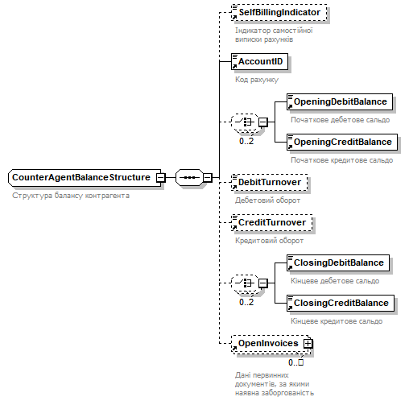

| diagram |  | ||
| children | SelfBillingIndicator AccountID OpeningDebitBalance OpeningCreditBalance DebitTurnover CreditTurnover ClosingDebitBalance ClosingCreditBalance OpenInvoices | ||
| used by |
|
||
| annotation |
|
||
| source | <xs:complexType name="CounterAgentBalanceStructure"> <xs:annotation> <xs:documentation>Структура балансу контрагента</xs:documentation> </xs:annotation> <xs:sequence> <xs:element ref="SelfBillingIndicator" minOccurs="0"> <xs:annotation> <xs:documentation>Індикатор самостійної виписки рахунків</xs:documentation> </xs:annotation> </xs:element> <xs:element ref="AccountID"> <xs:annotation> <xs:documentation>Код рахунку</xs:documentation> </xs:annotation> </xs:element> <xs:choice minOccurs="0" maxOccurs="2"> <xs:element ref="OpeningDebitBalance"> <xs:annotation> <xs:documentation>Початкове дебетове сальдо</xs:documentation> </xs:annotation> </xs:element> <xs:element ref="OpeningCreditBalance"> <xs:annotation> <xs:documentation>Початкове кредитове сальдо</xs:documentation> </xs:annotation> </xs:element> </xs:choice> <xs:element ref="DebitTurnover" minOccurs="0"> <xs:annotation> <xs:documentation>Дебетовий оборот</xs:documentation> </xs:annotation> </xs:element> <xs:element ref="CreditTurnover" minOccurs="0"> <xs:annotation> <xs:documentation>Кредитовий оборот</xs:documentation> </xs:annotation> </xs:element> <xs:choice minOccurs="0" maxOccurs="2"> <xs:element ref="ClosingDebitBalance"> <xs:annotation> <xs:documentation>Кінцеве дебетове сальдо</xs:documentation> </xs:annotation> </xs:element> <xs:element ref="ClosingCreditBalance"> <xs:annotation> <xs:documentation>Кінцеве кредитове сальдо</xs:documentation> </xs:annotation> </xs:element> </xs:choice> <xs:element ref="OpenInvoices" minOccurs="0" maxOccurs="unbounded"> <xs:annotation> <xs:documentation>Дані первинних документів, за якими наявна заборгованість</xs:documentation> </xs:annotation> </xs:element> </xs:sequence> </xs:complexType> |